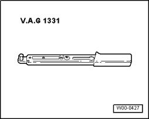
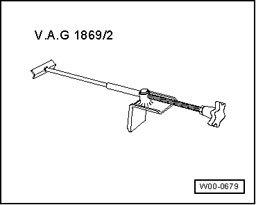
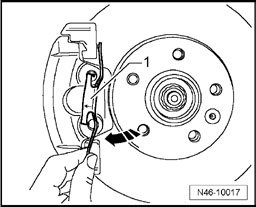
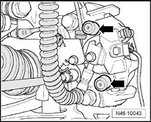
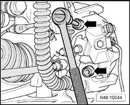
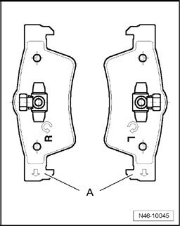
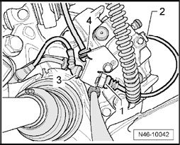
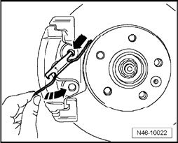
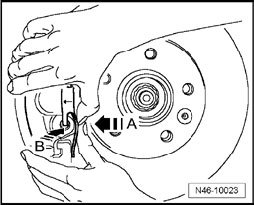
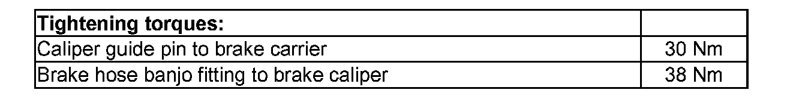

Brake Caliper, Removing and Installing
Brake caliper, removing and installing
Special tools, testers and auxiliary items required

^ Torque Wrench 5-50 Nm VAG 1331

^ Brake Pedal Actuator VAG 1869/2
Removing
Work procedure applies only for replacing or when performing subsequent service work on brake caliper.
- Remove wheels.
- Push retaining spring toward direction of - arrow A - until it can be removed from the hole in the direction of - direction of arrow B -.

- Rotate the retaining spring in the direction of the - arrow - until it can be removed from upper hole.
- Disconnect the electrical connector - 1 - from the brake pad wear indicator.
- Remove the wire for brake pad wear indicator from the bracket - 2 - at brake caliper.
- Remove bottom of connector - 3 - of brake pad wear indicator and wheel speed sensor wire - 4 - from brake caliper bracket.
- Connect bleeder hose of bleeder bottle to bleeder valve of brake caliper and then open bleeder valve.
- Insert Brake Pedal Actuator VAG 1869/2.
- Close bleeder valve and remove bleeder bottle.
- Remove brake line.

- Remove covers - arrows -.

- Remove both guide pins - arrows - from the brake caliper.
- Remove the brake caliper from brake carrier.
- Remove the brake pads from brake caliper.
Installing
^ Piston is pressed back.
^ Outer brake pad sits on brake carrier.
- Install inner brake pad, with retaining spring, to the brake caliper (piston).
Note:
^ The inner brake pads (piston side) have a predetermined running direction and are marked for this purpose.

Directional brake pads
When installed, arrow - A - on the backing plate of brake pad must face downward.

- Secure brake caliper to brake carrier using both guide pins - arrows -.
- Install both protective caps.
- Install brake hose on brake caliper.
- Remove Brake Pedal Actuator VAG 1869/2.

- Install wheel speed sensor wire - 4 - into bracket at brake caliper.
- Install electrical connectors - 3 - and - 1 - for the brake pad wear indicator into the brake caliper bracket.
- Secure brake pad wear indicator wire to the bracket - 2 - at brake caliper.

- Insert retaining spring in upper hole - arrow - and rotate in the direction of - arrow - -
- Attach retaining spring to lower brake carrier.

- Push retaining spring in the direction of - arrow A - first and then into hole of brake caliper at the same time direction of - arrow B
- Bleed brake system.
- Install wheels.
Note:
^ Before moving vehicle, depress brake pedal several times firmly to properly seat brake pads in their normal operating position.
^ Check brake fluid level.
Tightening torques:
Tightening torques:
